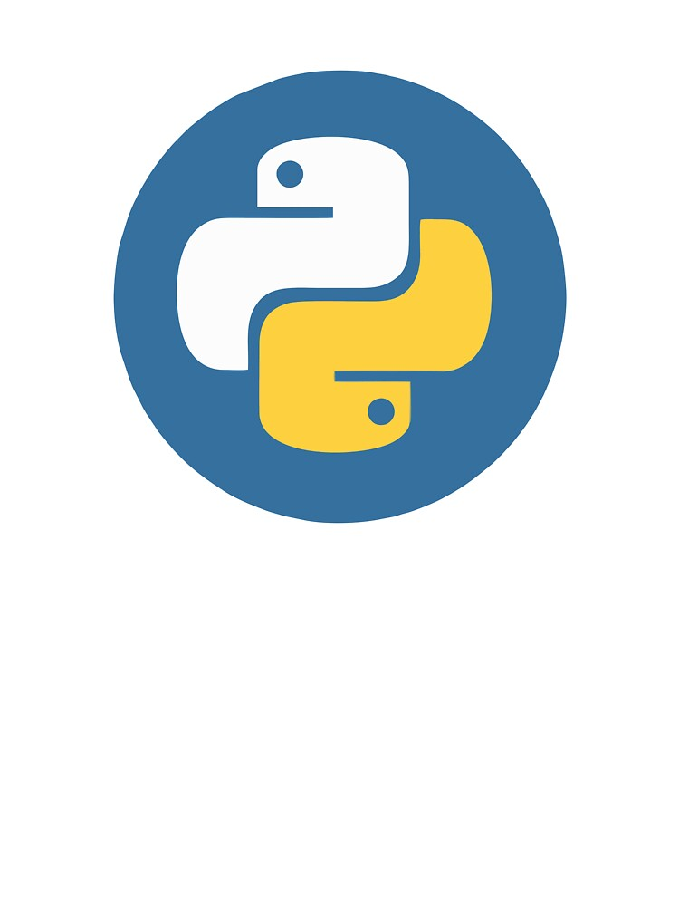
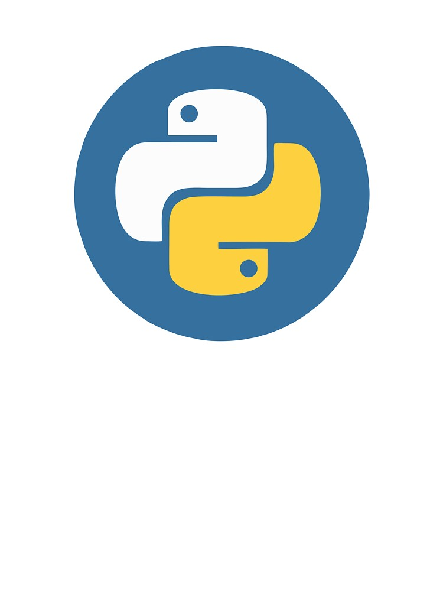
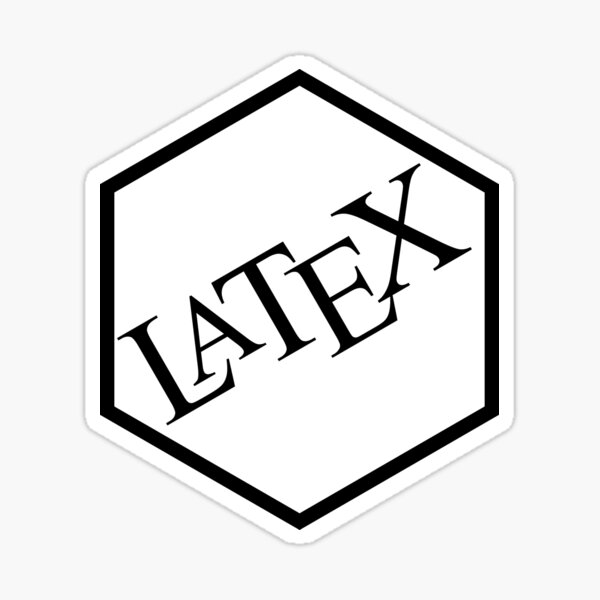
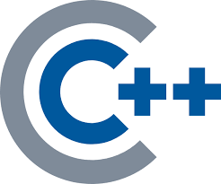

About
Je me présente Satourdine Madi, j'ai eu mon baccalauréat en 2020 en Filiaire Scientifique.
Je suis venu en France pour une licence en Informatique Mathématique et Science de l'Ingénieur.
Ayant participer à des concours j'aime bien les challenges et je ne lache pas un travail ou autre chose
dans je suis investis malgré le niveau de difficulté.
Connaissances/
Compétence

 
 